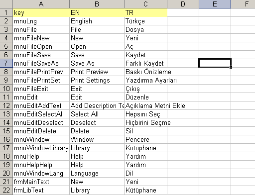

[prew] [next]
Localize EKTS
EKTS was developed for use internationally. There for it has a separate language file which can be modified using Unicode text editor or Microsoft Excel.

Figure 17 ulng.xls Excel language file.
To add any languages follow descriptions below:
- Open ulng.xls file located in installation folder using Microsoft Excel.
- Each column represents one language. First column contains key values used by software. Do not change first column.
- Add a new language on next empty column similar to previous ones.
- On first raw write short initials to be used by program.
- On next rows enter translation of each row. You can translate from English or Turkish.
- After completing translation save file in xls format for further use. And save using save as in Unicode Text file format, in the same folder as EKTS.exe file for being used by software (EKTS).
- Close xls and txt files and run EKTS.
- Select your new added language from Window > Language menu. Your language will be added to the menu automatically.
It is possible to add language using any Unicode Text editor separating each column by tab and each row by new line in ulng.txt file.
Send created language file to ekts@veppa.com to make it available to other people who uses your language.